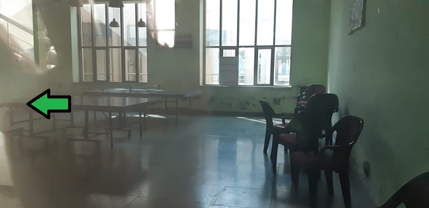

|  |
AboutTable tennis, also known as ping-pong, is a sport in which two or four players hit a lightweight ball back and forth across a table using small bats. The game takes place on a hard table divided by a net. Except for the initial serve, the rules are generally as follows: players must allow a ball played toward them to bounce one time on their side of the table, and must return it so that it bounces on the opposite side at least once. A point is scored when a player fails to return the ball within the rules. Play is fast and demands quick reactions. Spinning the ball alters its trajectory and limits an opponent's options, giving the hitter a great advantage. |